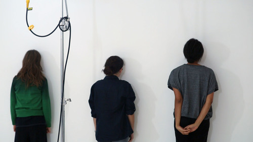

Project
Ponte
Projects
Leaving Cambridge Again
Art + Tech
Leaving Cambridge Again
About
Project Ponte
Donate
Contact
PROJECTS
Leaving Cambridge Again
Filmed by Dr. Frederick Baker, 2016-2017
Leaving Cambridge Again
Filmed by Dr. Frederick Baker, 2016-2017
Leaving Cambridge Again
Filmed by Dr. Frederick Baker, 2016-2017
Leaving Cambridge Again
Filmed by Dr. Frederick Baker, 2016-2017
ART + TECH
COLLABORATIONS
About
Project Ponte
Project PONTE is a non-profit art curation and art education organization. Our goal is to bring various cultures together through art. By working with scholars and artists
(...more)

Donate
Support us in presenting groundbreaking long durational and collaborative works, providing educational
(...more)
Contact
7545 Irvine Center Drive, Ste 200, Irvine, CA 92618
949-988-0533
ilee@projectponte.org/ mniu@projectponte.org